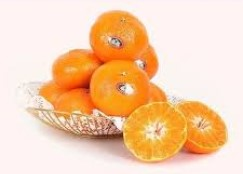

레드향이란?
껍질에 굵은 빛이 돋아 레드향이라 불린다.
레드향은 한라봉과 귤을 교배한 것으로 일반귤보다 2~3배 크고, 과육이 붉고 통통하다.
비타민C 와 비타민 P가 풍부해 혈액순환, 감기예방 등에 좋은 것으로 알려져있다.

레드향을 이용한 레시피
재료 : 레드향 1개, 아보카도 1개, 토마토 1개, 샐러드 채소 30g
드레싱 : 올리브유 1큰술, 레몬즙 2큰술, 꿀 1큰술, 소금 약간
- 샐러드 채소를 씻어 물기를 제거한 후 먹기 좋게 썰어서 준비합니다.
- 레드향과 아보카도, 토마토도 먹기 좋은 크기로 썰어 둡니다.
- 드레싱 재료를 믹서에 한꺼번에 넣고 갈아 줍니다.
- 볼에 샐러드 채소와 레드향, 아보카도, 토마토를 넣고 드레싱을 뿌리면 끝!